CS184/284A Spring 2026 Homework 3 Write-Up
Link to webpage: cal-cs184-student.github.io/hw-webpages-Hoponga/hw3/ Link to GitHub repository: github.com/cal-cs184-student/hw3-pathtracer-superpgangs

Overview
In this homework, we built a physically-based path tracer from scratch. Starting from raw camera rays all the way up to global illumination, we implemented the core systems that make rendering work: ray generation, primitive intersection (triangles and spheres), a bounding volume hierarchy for acceleration, direct and indirect lighting, and adaptive sampling to reduce noise efficiently.
The most interesting thing we took away from this was how much the rendering pipeline is really just a chain of approximations — each step is an estimate, and the whole thing converges to something physically plausible only when you get all the pieces right. It was also surprisingly satisfying to go from broken rainbow debug views to clean, properly shaded scenes just by filling in the math correctly.
Part 1: Ray Generation and Scene Intersection
Ray Generation and the Rendering Pipeline
The rendering pipeline starts at the camera. For each pixel on the screen, we generate one or more rays that pass through the virtual camera sensor into the scene. To do this, we convert the pixel's normalized image coordinates \((x, y) \in [0,1]^2\) into camera space, mapping them linearly onto a sensor plane at \(Z = -1\). The sensor extents are defined by the horizontal and vertical field-of-view angles:
\[ \text{sensor}_x = \left(-\tan\!\left(\frac{hFov}{2}\right),\; \tan\!\left(\frac{hFov}{2}\right)\right), \quad \text{sensor}_y = \left(-\tan\!\left(\frac{vFov}{2}\right),\; \tan\!\left(\frac{vFov}{2}\right)\right) \]So a normalized image coordinate \((x, y)\) maps to a camera-space point:
\[ p_{cam} = \left((2x - 1)\tan\!\left(\frac{hFov}{2}\right),\;\; (2y - 1)\tan\!\left(\frac{vFov}{2}\right),\;\; -1\right) \]
The camera-space ray originates at \((0,0,0)\) and points toward \(p_{cam}\). We then transform this ray into world space using the camera-to-world rotation matrix c2w, with the origin translated to pos. The direction gets normalized, and min_t / max_t are initialized to the near and far clip planes.
For pixel sampling (raytrace_pixel), we average ns_aa rays per pixel. Each sample draws a random 2D offset from gridSampler, adds it to the pixel corner, normalizes by image dimensions, and calls generate_ray. The radiance estimates from est_radiance_global_illumination are averaged together to produce the final pixel color.
Triangle Intersection
We used the Möller Trumbore algorithm for ray-triangle intersection. Given a ray \(\mathbf{r}(t) = \mathbf{o} + t\mathbf{d}\) and a triangle with vertices \(P_1, P_2, P_3\), the algorithm solves for \((t, u, v)\) — where \(u\) and \(v\) are barycentric coordinates — using Cramer's rule applied to the system derived from setting the ray equal to a point inside the triangle:
\[ \begin{bmatrix} t \\ u \\ v \end{bmatrix} = \frac{1}{\mathbf{S_1} \cdot \mathbf{E_1}} \begin{bmatrix} \mathbf{S_2} \cdot \mathbf{E_2} \\ \mathbf{S_1} \cdot \mathbf{S} \\ \mathbf{S_2} \cdot \mathbf{d} \end{bmatrix} \]where \(\mathbf{E_1} = P_2 - P_1\), \(\mathbf{E_2} = P_3 - P_1\), \(\mathbf{S} = \mathbf{o} - P_1\), \(\mathbf{S_1} = \mathbf{d} \times \mathbf{E_2}\), \(\mathbf{S_2} = \mathbf{S} \times \mathbf{E_1}\).
An intersection is valid when \(t \in [\texttt{min\_t}, \texttt{max\_t}]\) and \(u \geq 0\), \(v \geq 0\), \(u + v \leq 1\). If valid, we update max_t and fill in the Intersection struct. The surface normal is interpolated from the three vertex normals using the barycentric coordinates \((1 - u - v, u, v)\).
Sphere Intersection
For spheres, we substituted the ray equation into the sphere equation \(|\mathbf{r}(t) - \mathbf{c}|^2 = R^2\) and solved the resulting quadratic. If the discriminant is negative there's no intersection; otherwise we take the smaller root that still falls within [min_t, max_t]. The surface normal at the hit point is just the normalized vector from the sphere center to that point.
Sample Render Results
Below are three normal-shaded renders produced directly by the path tracer with the -f flag. These were rendered in a normal-visualization mode so the color at each hit point is the interpolated surface normal mapped from [-1, 1] to [0, 1], which makes it easy to verify that camera rays and primitive intersections are both working correctly.
|
|

|
|
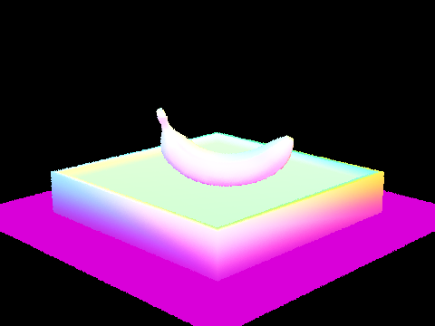 |
|
Part 2: Bounding Volume Hierarchy
To accelerate intersection tests, we built a BVH recursively over the scene primitives. For each node we first compute the bounding box of the primitive range. If the range is small enough, we stop and make a leaf by storing the iterators for that contiguous block of primitives. Otherwise, we compute the bounding box of primitive centroids, choose the axis with the largest extent, and split the range at the median centroid along that axis using nth_element. That gives a reasonably balanced tree while keeping the implementation simple. During traversal, we first intersect the ray with the node bounding box; only if that test passes do we recurse into the children or test primitives in a leaf. In practice this cuts the number of primitive intersection tests per ray from “all triangles in the scene” down to a small number of leaf-local tests.
|
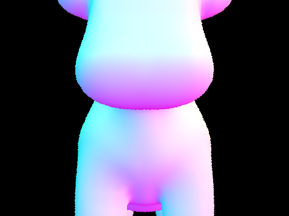 |

|
|
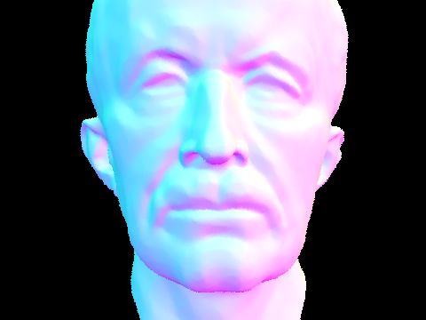 |
|
We compared rendering times with and without BVH acceleration using the same settings for each scene: 160x120 resolution, 1 sample per pixel, 1 thread, and normal shading only. On our machine, cow.dae went from 0.3868s without BVH to 0.0145s with BVH, bunny.dae went from 2.6097s to 0.0262s, and maxplanck.dae went from 5.0046s to 0.0176s. That is about a 26.7x, 99.6x, and 284.4x speedup respectively. The primitive-test counts tell the same story: without BVH each ray effectively tested every primitive in the scene, while with BVH the average dropped to about 18.4 tests per ray for cow, 28.1 for bunny, and 14.8 for maxplanck. As scene complexity increases, the gap widens sharply, which is exactly what we expect from replacing near-linear traversal with hierarchical culling.
Part 3: Direct Illumination
We first implemented the diffuse BSDF itself in DiffuseBSDF::f as the Lambertian term reflectance / PI, and zero-bounce lighting in zero_bounce_radiance by returning the intersected surface emission. From there, we added two versions of direct-light estimation. In estimate_direct_lighting_hemisphere, we build a local frame at the hit point, draw uniform hemisphere directions in object space, transform each one into world space, cast a shadow ray with min_t = EPS_F, and only keep samples whose shadow ray lands on an emissive surface. Each contribution is accumulated as f(wo, wi) * Le * cos(theta) / pdf, then averaged over all samples. In estimate_direct_lighting_importance, instead of guessing directions blindly, we iterate over the scene lights, call sample_L on each one, reject directions behind the surface, and cast a bounded shadow ray with max_t = distToLight - EPS_F to test visibility. Delta lights are sampled once while area lights use ns_area_light samples, and the visible contributions are averaged per light. The wrapper one_bounce_radiance selects between the two methods based on direct_hemisphere_sample.
All of the screenshots below were rendered with the -f flag rather than captured with an OS screenshot. For the comparison grids we used CBbunny.dae, since its area light produces a clear soft-shadow penumbra and makes the variance difference easy to see.
|
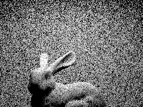 CBbunny.dae with uniform hemisphere sampling, -s 1 -l 64 -m 1 -H |
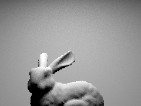 CBbunny.dae with light importance sampling, -s 1 -l 64 -m 1 |
To compare noise under light sampling alone, we rendered the same view with 1 sample per pixel and varying numbers of light rays.
|
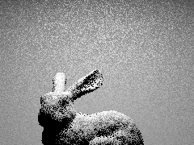 -l 1 |
-l 4 |
-l 16 |
-l 64 |
The importance-sampled images converge much faster than the hemisphere-sampled image because almost every sample is aimed directly at a light source instead of wasting probability mass on dark directions. With -s 1 and -l 1, the shadow under the bunny is extremely speckled and the ceiling/floor carry noticeable Monte Carlo noise. Increasing to -l 4 already stabilizes the penumbra, -l 16 makes the shadow edge much smoother, and -l 64 is close to clean at this resolution. In contrast, hemisphere sampling at the same nominal sample count is still visibly noisier, especially in the soft shadow and across the back wall, because the estimator only rarely lands on the area light.
Part 4: Global Illumination
For indirect lighting, we implemented DiffuseBSDF::sample_f using the cosine-weighted hemisphere sampler already stored in the BSDF. It writes the sampled incoming direction wi, stores the corresponding PDF, and returns the same Lambertian value as f. The main recursive work happens in at_least_one_bounce_radiance: we construct the local frame at the current hit point, compute the explicit direct term with one_bounce_radiance, sample one new direction from the BSDF, transform that direction back to world space, and trace a new ray with min_t = EPS_F and depth decremented by one. If the new ray hits another surface, we recurse and multiply the returned radiance by f * cos(theta) / pdf. Camera rays are initialized with depth = max_ray_depth in raytrace_pixel, so the depth field becomes the recursion budget.
We then added Russian roulette in the recursive integrator. We always allow the first indirect bounce when max_ray_depth > 1, and on later recursive calls we continue with probability 0.65. Surviving paths divide by that continuation probability so the estimator stays unbiased in expectation. We also fixed the unaccumulated-bounce path used for the rubric visualizations: when isAccumBounces=false, est_radiance_global_illumination now returns only the requested mth-bounce contribution instead of incorrectly adding zero-bounce emission on top.
|
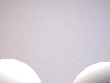 CBspheres_lambertian.dae with global illumination, -s 1024 -l 16 -m 5 |
CBbunny.dae with global illumination, -s 1024 -l 16 -m 5 |
The next pair isolates direct and indirect illumination from the same CBbunny view.
-D -s 1024 -l 16 -m 5 |
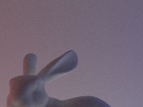 -I -s 1024 -l 16 -m 5 |
The direct-only render is dominated by the gray area-light shading and crispest visible shadowing, while the indirect-only render is much dimmer and lower-frequency. The indirect image is where the red and blue walls start tinting the bunny and where the shadowed side stops looking unnaturally black.
For the unaccumulated bounce visualizations below, we rendered CBbunny.dae with isAccumBounces=false and varied -m from 0 to 5.
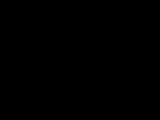 m=0 |
m=1 |
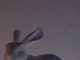 m=2 |
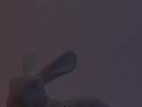 m=3 |
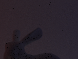 m=4 |
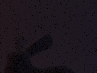 m=5 |
The second bounce is the first one where the Cornell box starts to matter: light reflects off the floor and walls and picks up visible red/blue color bleeding on the bunny, especially on the left side and underside. The third bounce is much dimmer and mostly contributes low-frequency fill light in the shadowed regions. Even though the third bounce is subtle, it helps replace the harsh “direct light plus black shadows” look of rasterization with a softer, more plausible distribution of energy across the scene.
The next table compares accumulated and unaccumulated bounces for the same depth settings.
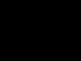 m=0 |
m=1 |
m=2 |
m=3 |
m=4 |
m=5 |
m=0 |
m=1 |
m=2 |
m=3 |
m=4 |
m=5 |
Accumulated renders quickly approach the final image because each depth includes all lower-order bounces as well. The unaccumulated row makes it clear that higher-order bounces decay rapidly: m=2 still matters, m=3 is subtle, and beyond that the remaining light transport is very low-energy and mostly appears as faint ambient fill.
For Russian roulette, we rendered CBbunny.dae with the RR-enabled integrator at depths 0, 1, 2, 3, 4, 100.
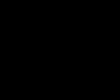 m=0 |
m=1 |
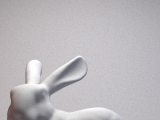 m=2 |
m=3 |
m=4 |
m=100 |
By m=4, the image is already visually close to the m=100 result. That matches the intuition behind Russian roulette here: long diffuse paths are possible, but their energy falls off quickly, so sampling a potentially unbounded path length is useful mainly to keep the estimator unbiased rather than because late bounces dominate the image.
Finally, we compared different sample-per-pixel rates on the same scene using 4 light rays.
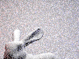 s=1 |
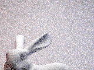 s=2 |
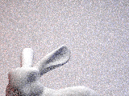 s=4 |
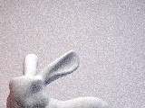 s=8 |
s=16 |
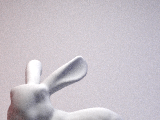 s=64 |
s=1024 |
The progression is monotonic: s=1 and s=2 are dominated by salt-and-pepper noise, s=16 is already structurally reliable, and s=1024 is the first setting where the indirect gradients and color bleeding look essentially stable instead of stochastic.
Part 5: Adaptive Sampling
We implemented adaptive sampling directly inside raytrace_pixel. As each camera sample returns a radiance estimate L, we accumulate the running sums s1 += illum(L) and s2 += illum(L)^2, where illum() converts RGB radiance to a scalar brightness used for the convergence test. Every samplesPerBatch samples, we estimate the mean mu = s1 / n, the unbiased variance (s2 - s1 * s1 / n) / (n - 1), and the 95% confidence interval width I = 1.96 * sqrt(var / n). If I <= maxTolerance * mu, we terminate early for that pixel; otherwise we keep sampling until the maximum ns_aa budget is reached. After the loop, we write the final sample count into sampleCountBuffer, and the renderer automatically saves a matching _rate.png visualization alongside the normal output.
For the rubric renders below, we used -s 2048 -l 1 -m 5 -a 32 0.05 so that adaptive sampling had a large enough ceiling to redistribute work meaningfully. We chose two Lambertian Cornell-box scenes to make the sample-rate maps easy to interpret.
CBbunny.dae adaptive final render |
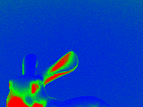 CBbunny.dae sampling-rate image |
|
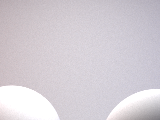 CBspheres_lambertian.dae adaptive final render |
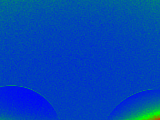 CBspheres_lambertian.dae sampling-rate image |
In the bunny rate map, the hottest regions are the ear silhouette, the bunny outline against the back wall, and the indirect-light transition zones near contact shadows. Those pixels have high variance because tiny changes in the ray sample can switch between bright direct lighting, dim indirect lighting, and colored wall bounce. Large smooth wall regions are mostly blue, meaning they converged quickly and were allowed to stop far short of the 2048-sample cap. The spheres scene shows the same pattern: most of the empty walls converge fast, while the sphere silhouettes and the high-gradient indirect region near the lower-right sphere demand far more samples. That is exactly the behavior we want from adaptive sampling: spend the budget where the estimator is noisy, and save work where the image is already stable.